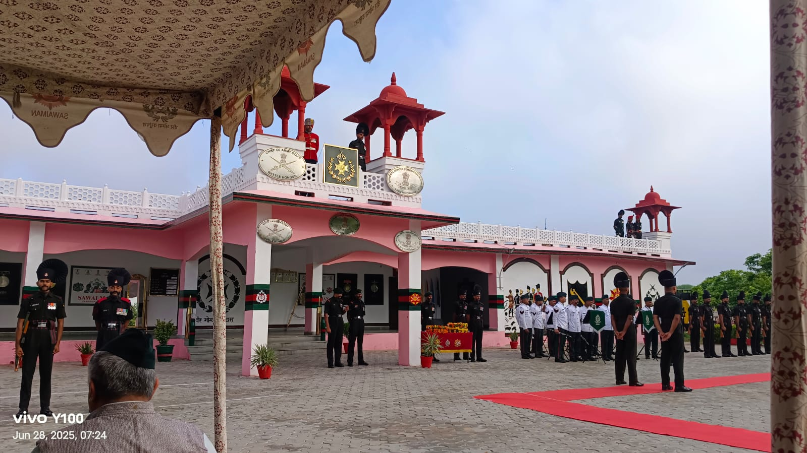
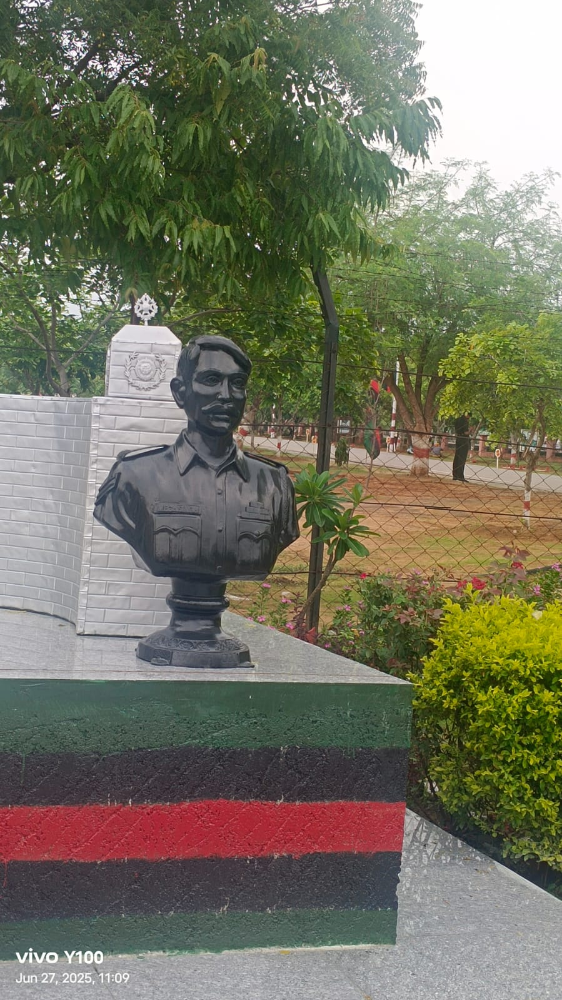
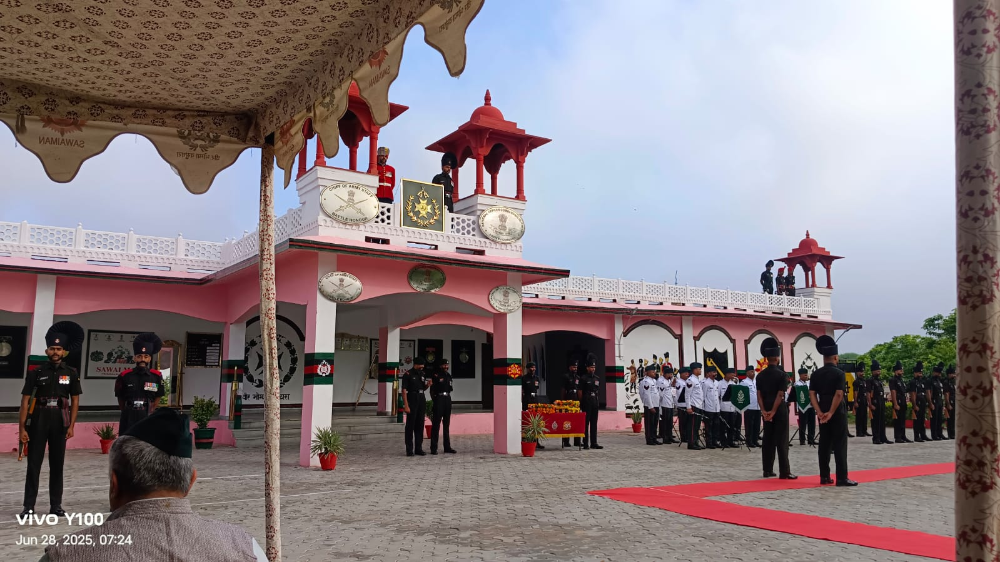
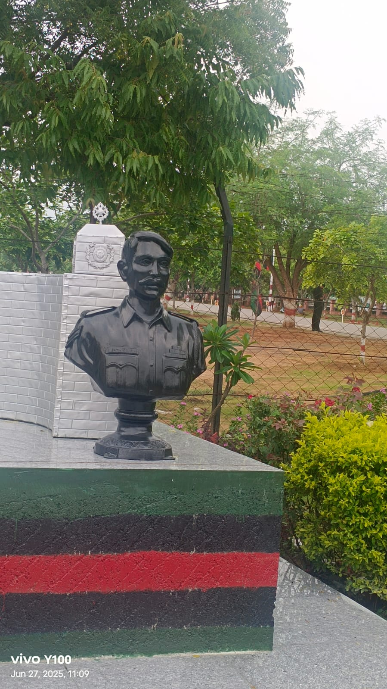

Gallantry Award

Kirti Chakra
Awarded For: Exceptional courage during live combat while saving fellow soldiers under enemy fire.
Presented By: Hon. President of India - Giani Zail Singh Ji
Presented By: Hon. Prime Minister of India - Mrs. Indira Gandhi Ji
Awarded On: 15 August 1982 (Posthumous)
 


